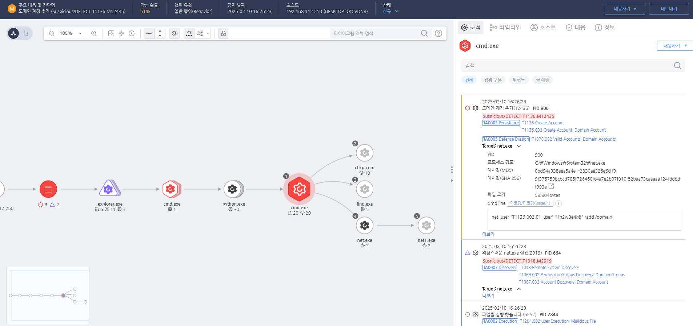

T1136.002.01 도메인 사용자 계정 생성
D3FEND
MITRE ATT&CK 액션을 기준으로 대응 방안을 작성
Detection
모니터링을 통해 net 명령어로 도메인 사용자 계정 생성 행위를 확인합니다.
Detection(EDR)

https://172.18.10.125:8903/#/analysis/incident/67a9ab8d002dc6cc00000204
Response
새로 생성된 의심스러운 도메인 계정을 비활성화하고 삭제합니다.
Mitigations
1. 애플리케이션 계정 관리 정책 수립
- 애플리케이션에서 사용하는 계정 생성 및 관리 정책을 수립하여, 불필요한 계정 생성을 방지합니다.
- 계정 생성 권한은 최소 권한 원칙(Least Privilege) 을 적용하여, 오직 승인된 관리자만 계정을 생성할 수 있도록 합니다.
- 정기적인 계정 감사를 통해 애플리케이션 계정의 존재 여부 및 권한을 점검하고, 필요 없는 계정을 제거합니다.
2. 애플리케이션 보안 강화
- 애플리케이션에서 기본 계정 또는 하드코딩된 자격 증명을 사용하지 않도록 하고, 가능한 경우 비밀번호 관리자나 환경 변수로 자격 증명을 관리합니다.
- 중요한 애플리케이션 계정에는 강력한 비밀번호 정책을 적용하고, 비밀번호 복잡성을 높여 공격자가 계정을 탈취하기 어렵게 만듭니다.
3. MFA 및 인증 강화
- 애플리케이션 계정 접근 시 멀티팩터 인증(MFA) 을 적용하여 추가적인 보안 계층을 제공합니다.
- SAML, OAuth 또는 OpenID Connect와 같은 강력한 인증 프로토콜을 사용하여 계정의 신뢰성을 높입니다.
4. 로그 및 모니터링
- 애플리케이션 로그인 로그를 활성화하여 계정 생성 및 접근 활동을 실시간으로 모니터링합니다.
- SIEM(Security Information and Event Management) 시스템을 사용하여 계정 생성, 권한 변경 및 비정상적인 로그인 시도를 탐지하고 경고를 발생시킵니다.
- 로그인 실패나 비정상적인 로그인 패턴에 대한 경고를 설정하여 애플리케이션 계정이 악용될 가능성을 사전에 차단합니다.
5. 사용자 교육 및 보안 인식 강화
- 애플리케이션 계정 관리와 관련된 보안 교육을 진행하여 관리자가 애플리케이션 계정을 안전하게 생성하고 관리하도록 유도합니다.
- 정기적인 보안 인식 교육을 통해 애플리케이션 계정의 중요성과 계정 관리를 제대로 하지 않으면 발생할 수 있는 위험에 대해 경고합니다.
Affected Techniques
Action 실행시 함께 영향을 받는 다른 Techniqes
|D3FEND|
|:-----------:|